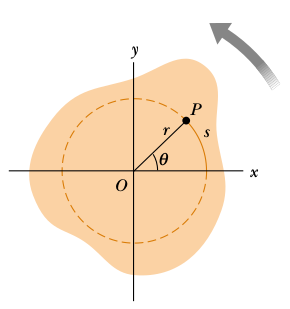

Saat yönü tersi yönde bir dönüş düşünelim, $s$ kadar dönüş olduysa, orijine uzaklık $r$ ise, açısal mesafe [1, sf. 297]
$$ \theta = \frac{s}{r} $$
ki $\theta$ radyan. Ya da
$$ s = r \theta $$
Çemberin tamamı $2\pi$ rad (tam bir dönüş), meselâ 60 derece $\pi / 3$ rad. Çemberin çevresinin formülü $2\pi r$, eğer $\theta = \pi / 3$ rad ise, $s = \pi / 3 \cdot r $.

Açısal hızı bir $P$ noktasının teğetsel hızından yola çıkarak hesaplayabiliriz, bu noktanın teğetsel hızı sonsuz ufak $s$'nin zamana göre değişimi olacaktır, yani $v = \mathrm{d} s / \mathrm{d} t$,
$$ v = \frac{\mathrm{d} s}{\mathrm{d} t} = r \frac{\mathrm{d} \theta}{\mathrm{d} t} $$
Elde edilen $\mathrm{d} \theta / \mathrm{d} t$ açısal değişimi gösteriyor, bu işte açısal hızdır, ona $\omega$ diyelim, o zaman teğetsel hızı açısal hız ile şöyle gösterebiliriz,
$$ v = r\omega $$
Formül diyor ki dönen bir katı objenin herhangi bir noktasının teğetsel hızı, o noktanın dönüş eksenine olan uzaklığı çarpı açısal hızına eşittir. O zaman, her ne kadar katı objenin her noktası aynı açısal hızla dönüyor olmasına rağmen her noktanın lineer hızı aynı değildir, çünkü $r$ her nokta için aynı değil. Üstteki formül dönüş merkezinden uzaklaştıkça hızın artacağını söylüyor. Teğetsel hızı hayal etmek için o noktada ayakta durabiliyor olsak yüzümüze çarpacak rüzgar hızını hayal edebiliriz.
İvmeyi de dahil edelim, açısal ivme ile teğetsel ivmenin bağlantısına bakalım, $v$'nin zamana göre türevini alırsak,
$$ a_t = \frac{\mathrm{d} v}{\mathrm{d} t} = r \frac{\mathrm{d} \omega}{\mathrm{d} t} $$
$$ a_t = r \alpha $$
Kaynaklar
[1] Resnick, Fundamentals of Physics, 8th Ed